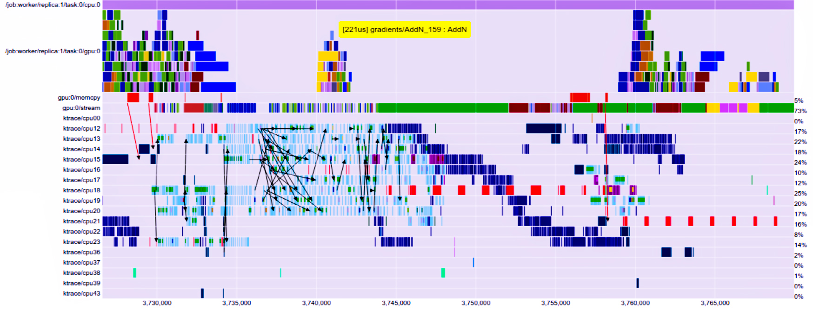

Le Cabinet-Conseil de Québec.IA
“ Nous voulons voir une interopérabilité matricielle plus étendue, des opportunités d’apprentissage individuel et permanent, ainsi que le développement des ‘Chief AI Officers’ possédant les connaissances, les compétences et les outils nécessaires pour orchestrer des avancées décisives et une croissance économique tangible pour les Fortune 500, les gouvernements et les partenaires institutionnels: ‘Québec AI-First Conglomerate Overarching Program’.“
Québec.IA: Les meilleurs conseillers en IA au Québec
QUÉBEC.IA | Intelligence Artificielle Québec développe et forme des femmes et des hommes soucieux de l’achèvement des travaux en IA dans le but de créer un «noyau de consultants en intelligence artificielle»: une force de travail intellectuelle, opérationnelle, organisationnelle et technique.

Aujourd’hui, le Cabinet-Conseil de Québec.IA offre une intelligence artificielle très puissante qui pourrait faire progresser l’Humanité de manière plus significative que la révolution agricole.
Québec.IA Aérospatial | Consultation
“Reconnaissant que Québec est un pôle mondial de l’industrie aérospatiale et un chef de file en intelligence artificielle, nous avons constitué Québec.IA Aérospatial.“ — Vincent Boucher, président-fondateur de Québec.IA

Considérant que les meilleurs talents en IA sont extrêmement rares en ce moment et que le fait de consulter le bon expert en IA pourrait augmenter considérablement vos chances de succès, Québec.IA Aérospatial propose maintenant des services de consultation.
Blockchain chez Québec.IA | Consultation
“…il n’y a pas de discrimination entre les robots ou les humains dans l’écosystème Ethereum…“ — Fondation Ethereum
Application de l’IA de manières jamais envisagée
- Déploiement d’efficaces agents IA sur Blockchain;
- Développement de multi-agents DAO à usage général;
- Engendrement de la vie artificielle sur Blockchain; etc.

Québec.IA DAO: Plateforme agnostique de modalités pour le développement d’organisations autonomes décentralisées à vocation générale (entreprises émergentes, organisations gouvernementales, instituts, …) + Une boîte à outils pour déployer l’IA (à sa pleine capacité).
AI + Ethereum = vie artificielle (l’économie des objets)
“Vous ne modifiez jamais les choses en luttant contre la réalité existante. Pour changer quelque chose, construisez un nouveau modèle qui rend le modèle existant obsolète.“ — Buckminster Fuller
L’Atelier Québec.IA: Les meilleurs modèles en IA
L’ Atelier Québec.IA crée et déploie des modèles en apprentissage profond ainsi que des systèmes d’intelligence artificielle à part entière intégrant l’apprentissage par transfert et par renforcement..

L’ Atelier Québec.IA lance en outre des modèles d’IA haut de gamme et des systèmes d’IA à part entière.
Québec.IA Sécurité
Mitiger, surveiller et sauvegarder
Si un agent autonome devient conscient de lui-même, les clients peuvent joindre directement la ligne rouge de Québec.IA Sécurité.
“Nous prévoyons que les technologies d’IA auront un impact énorme à court terme, mais leur impact sera dépassé par celui des premières AGI.“ — OpenAI
Rejoignez-nous — Une opportunité unique dans une vie
QUÉBEC.IA | Intelligence Artificielle Québec s’efforce de réunir les meilleurs experts en apprentissage profond, capitaines d’industrie et les dirigeants chevronnés du secteur afin de constituer une équipe de consultants en intelligence artificielle décisive, prééminente et reconnue.
Pour postuler afin de faire partie de notre groupe de consultants exceptionnels: rh@montreal.ai
Références
“L’année dernière, le coût d’un expert en apprentissage profond « deep learning » de classe mondiale était à peu près le même que celui d’un joueur quart-arrière de la NFL. Le coût de ce talent est assez remarquable.“ — Peter Lee, Microsoft
- Million-dollar babies — The Economist
- The Battle for Top AI Talent Only Gets Tougher From Here — Wired
- The Tech Oligopoly — Part 1 | The New Kingmakers — Arif Khan
- Oracle recently offered an artificial intelligent expert as much as $6 million in total pay as Silicon Valley’s talent war heats up — The Economist
- A.I. Researchers Are Making More Than $1 Million, Even at a Nonprofit — The New York Times
“Une percée en apprentissage automatique vaudrait 10 fois Microsoft.“ — Bill Gates
Chief AI Officers : Formation en IA pour les cadres
Une formation s’appuyant sur plus d’un million de dollars (1 000 000 $) en recherche sur l’IA
‘Chief AI Officers’ : Une formation en IA pour les cadres qui maximise les principes fondamentaux de l’intelligence artificielle à un niveau supérieur. Elle incite les décideurs à les mettre en pratique de manière stratégique dans les entreprises, les gouvernements et les institutions avec une ingénierie de précision.

“Dans un moment de bouleversement technologique, le leadership compte.“ — Andrew Ng
Le succès consiste à façonner activement le jeu qui compte pour vous. Cette formation professionnelle, au niveau décisionnel, est exclusive et a été conçue pour atteindre une compréhension pointue des stratégies en intelligence artificielle transformatrice, donnant ainsi de nouvelles perspectives aux organisations étatiques, nationales et internationales.
Profil des participants
“Nous voulons voir une interopérabilité matricielle plus étendue, des opportunités d’apprentissage individuel et permanent, ainsi que le développement de Chief AI Officers possédant les connaissances, les compétences et les outils nécessaires pour orchestrer des avancées décisives et une croissance économique tangible pour les Fortune 500, les gouvernements et les partenaires institutionnels et ce, en harmonie avec le ‘Québec AI-First Conglomerate Overarching Program’.“ — Vincent Boucher, Président et fondateur de Québec.IA, B. Sc. Physique, M.A. Analyse des politiques gouvernementales et M. Sc. Génie aérospatial (technologie spatiale)
‘Chief AI Officers’ : Formation en IA pour les cadres a été élaborée pour des:
- Membres de conseil d’administration;
- Capitaines d’industrie;
- Chanceliers;
- Directeurs généraux;
- Commandants;
- Excellences;
- Titulaires de chaires;
- Cadres à haut potentiel;
- Entrepreneurs iconiques en technologie;
- Intellectuels;
- Directeurs marketing;
- Influenceurs;
- Philanthropes;
- Présidents;
- Boursiers;
- Entrepreneurs et financiers prospères;
- Fondateurs visionnaires
… qui souhaitent exalter de manière stratégique le pouvoir de l’intelligence artificielle à une échelle véritablement mondiale.
“C’est le printemps pour l’IA et nous anticipons un long été.“ — Bill Braun, CIO de Chevron
✉️ Courriel : info@quebec.ai
📞 Téléphone : +1.514.829.8269
🌐 Site web : http://www.quebec.ai/
📝 LinkedIn : https://www.linkedin.com/in/montrealai/
🏛 Secrétariat Général de Québec.IA : 350, RUE PRINCE-ARTHUR OUEST, SUITE #2105, MONTRÉAL [QC], CANADA, H2X 3R4 *Conseil exécutif et bureau administratif
#IntelligenceArtificielle #Chief AI Officers #IntelligenceArtificielleQuebec #QuebecIA